A Walk in Northern Sweden from Abisko to Kvikkjokk
2013-08-09
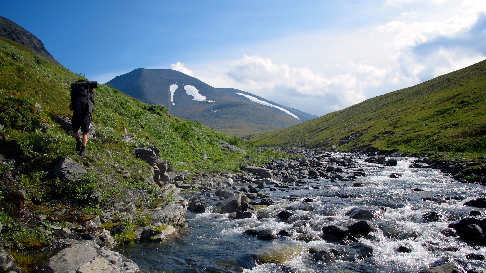
In February, I found an unexpected email in my inbox. Just a cryptic question, ‘Do you still have your old backpack?’ It was Niklas, a Swedish friend of mine, and I knew what he was getting at. We’d talked about heading north to see the Scandinavian mountains (Fjällen) back when I lived in Stockholm but never organised it. This time we made the plans and in August I was stood with Nik and the old backpack at Stockholm’s Central Station, ready to make the long journey north.
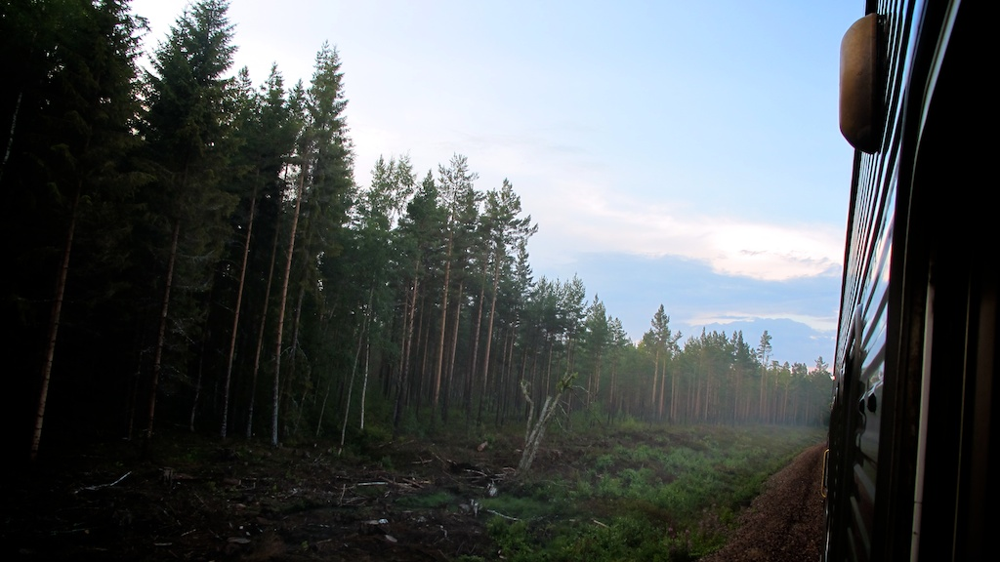
Our journey began with an 18 hour sleeper train up country from Stockholm. Departing at 6 in the evening, we studied our maps over beers in the restaurant carriage before settling in to the basic but comfortable cabins to watch the forests and lakes go by the window. Gently rocked by the train we slept well and at noon the next day pulled up in Abisko, a small village at the top of Sweden and the start of our adventure.
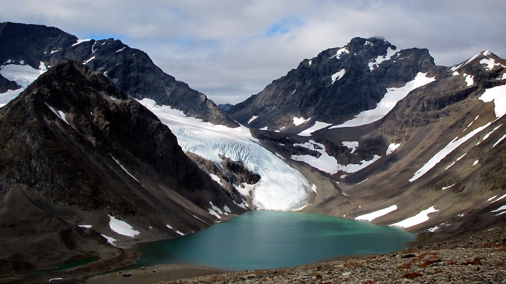
Kungsleden (The King’s Trail) is a four hundred kilometre marked route across arctic Sweden, from Abisko at the top down through Lapland, Europe’s last proper wilderness. You can hike it when the snow melts in the late summer or cross-country ski in the winter.
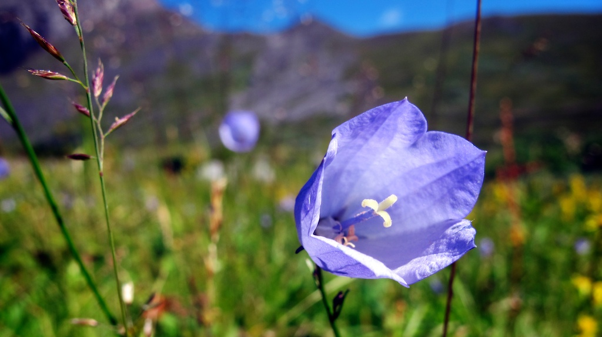
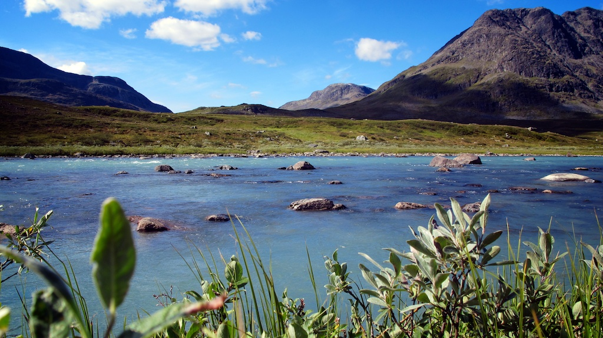
The trail is well-maintained and the excellent Svenska Turistföreningen (STF) mountain huts are spaced roughly a day’s walk apart, so it makes a great way to explore this part of the world. But we weren’t taking Kungsleden. ‘A highway for tourists’ says Nik. Kungsleden follows the valleys and we wanted to be up in the mountains and in the wild, so we made use of Sweden’s allmansrätten (right-to-roam) to navigate our own journey through Lapland.
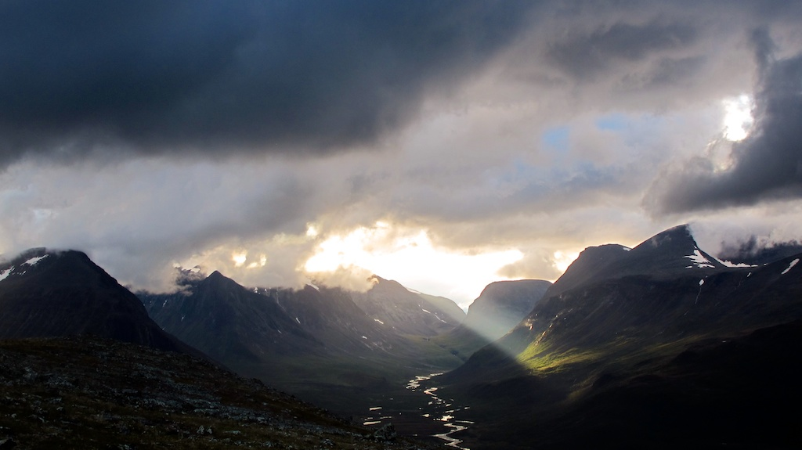
We’d meet up with the trail later on at Kebnekaise, Sweden’s highest mountain, to climb to its summit and then continue south to the village of Kvikkjokk, where a once-a-day bus goes to Murjek. From Murjek you can get a local train to Jokkmokk. From Jokkmokk you get back on the the long train down to Stockholm.
Hit the North
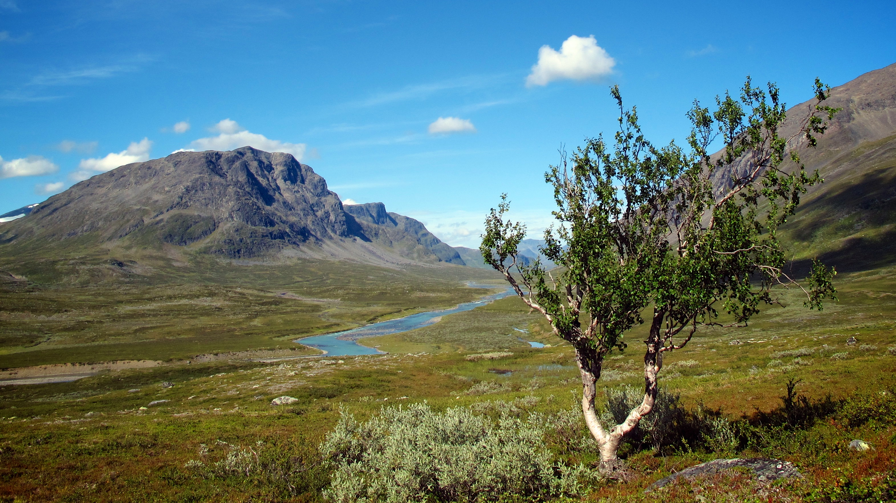
Two weeks in the Arctic Circle in August means no darkness, with the sun slowly dropping below the horizon but then rising again before the night has chance to fall. Much of the day is a long dawn/dusk, when the blue glaciers seem to glow and the dark jagged mountains are bathed in a pink ethereal light. We hiked at midnight as easily as at noon.
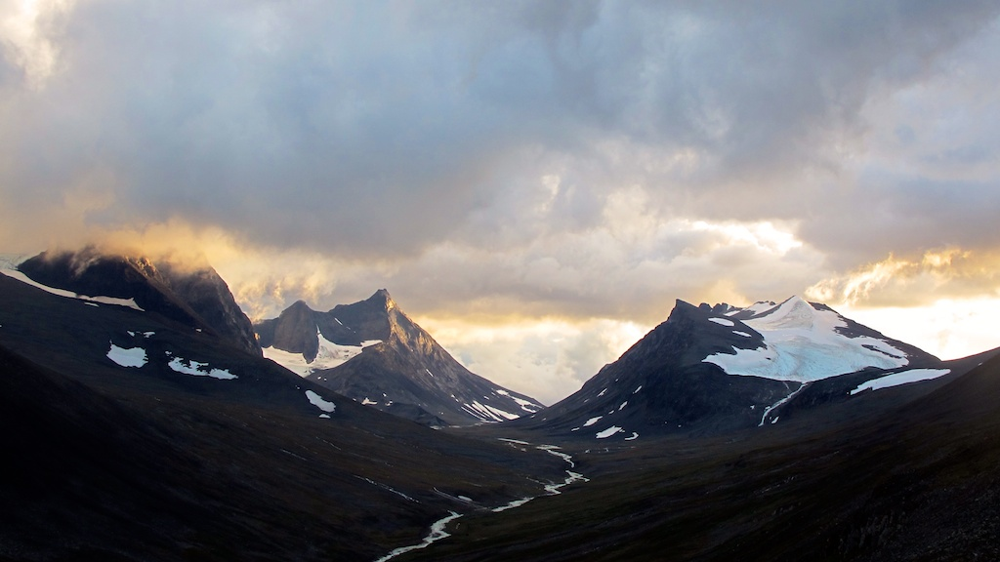
Cutting our own path through the high mountain passes meant we found perfect isolation, going without seeing another person for up to five days at one point. And of course there’s no phone signal, never mind WiFi, so no inboxes, no news and no noise from the world for a couple of weeks. Just the time to explore a quiet wilderness.
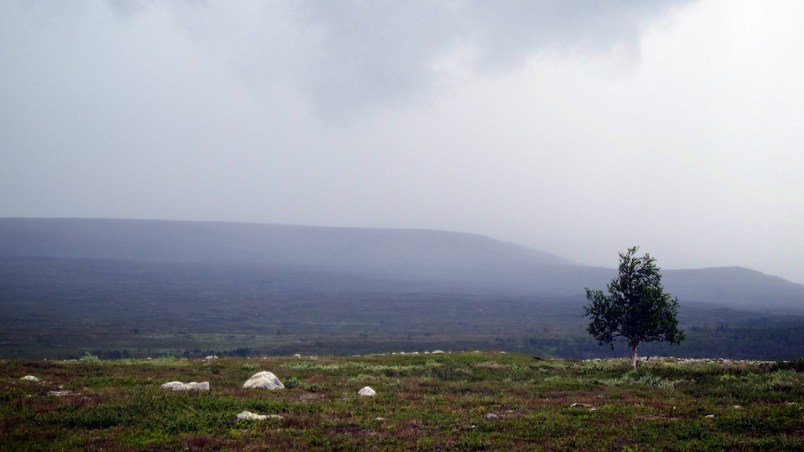
To survive out there we had to carry everything we needed: the tent, stove, food. We each carried about 25 kilos in our backpacks. Our meals had to be basic: porridge or muesli for breakfast, with foraged blueberries to flavour.
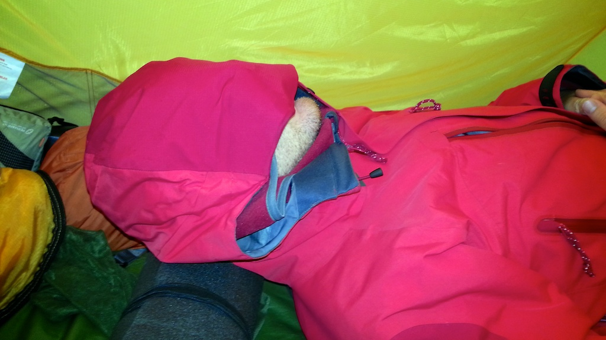
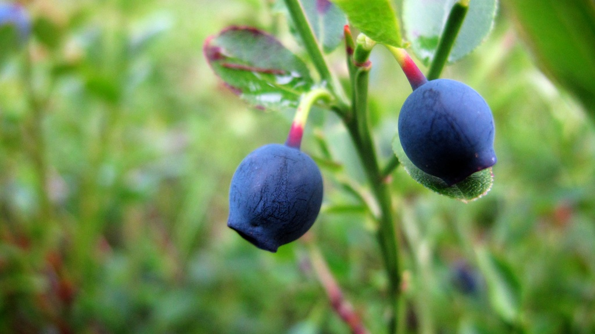
Dark rye bread for lunch. Nuts, dried apricots and chocolate as we walked. Macaroni cooked on the stove for dinner with a few different dried sauces. Doesn’t sound that exciting, but after a whole day of walking we always enjoyed hot food.
I Follow Rivers
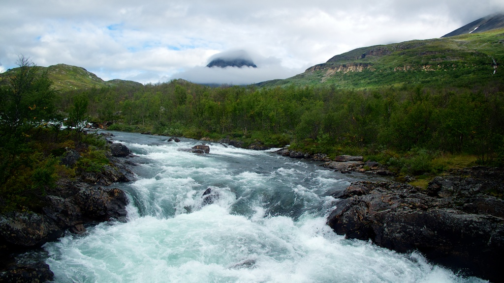
Most of the snow had melted by August but the rivers were full, especially after the days of heavy rain. Many times a day we’d come to a wide brimming stream and have to find a place safe enough to jump across stones, or throw our bags to the other side to make a running leap and hope we wouldn’t end up swimming.
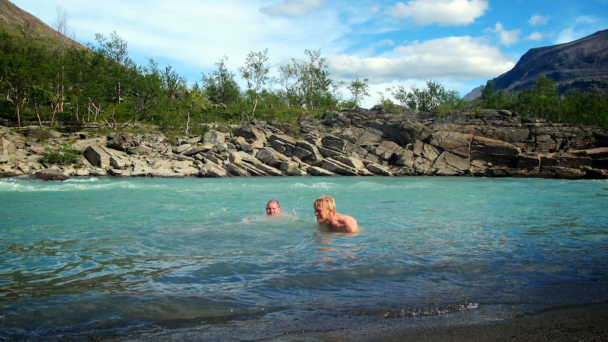
Having so much water around meant we didn’t have to worry too much about carrying litres — it was everywhere, clean and delicious to drink. There’s not much better than a melting arctic glacier to quench a thirst. One afternoon the sun came out and we took a shivery dip in the Tjäktiajåkka river.
Some days we found comfortable places to camp. Others we had to take what we could find, swiping at clouds of mosquitos in the wet valleys or sleeping on a bed of rocky scree in the uplands.
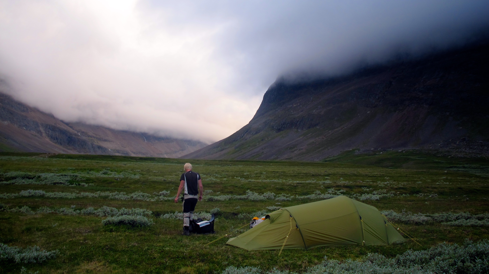

Hoping to head off the insects with altitude on day 3, we set up camp at 1,350 metres on a narrow ledge over a huge valley. Soon after, we realised this might not be the best place to be as a storm set in. I lay awake all night in the deafening wind sure we were soon to be blown off into the abyss. Nik slept unperturbed.
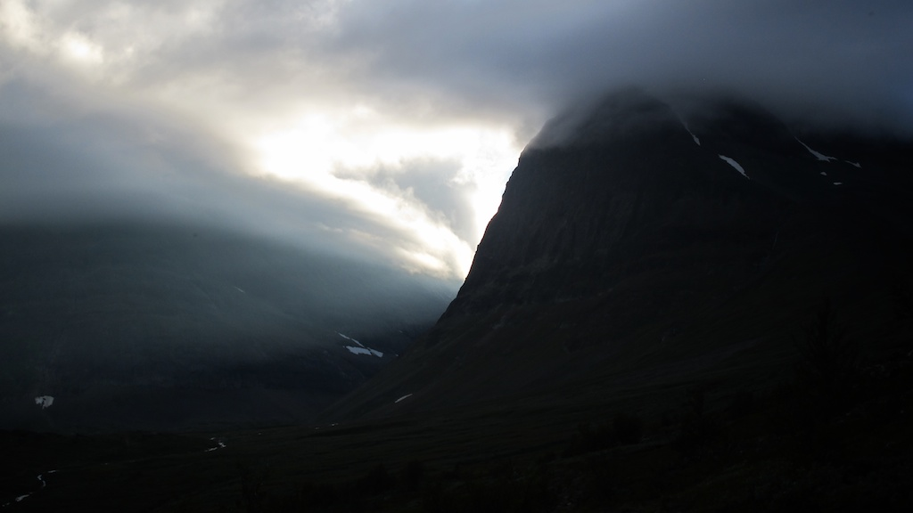
The storm wouldn’t let up in the morning so we broke camp in a raincloud, got lost in the fog and bashed ourselves up a few times scrambling down over miles of huge wet boulders, slipping with heavy packs and landing hard on shins and knees. The other side of being off-grid is that if one of us broke an ankle we’d have to set up camp and then the other would need to walk, possibly for days, to get help. Thankfully we had no serious mishaps.
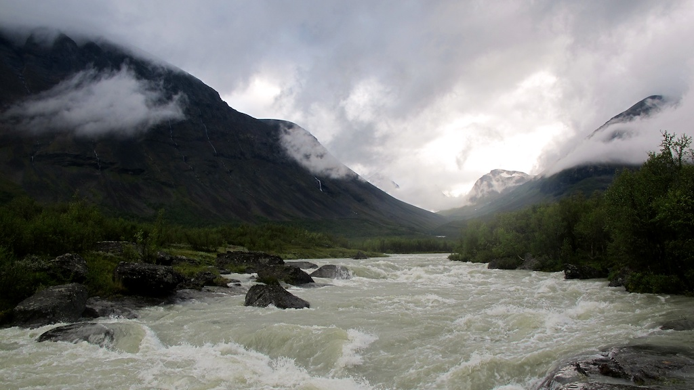
In the afternoon the rain eased and we followed the swollen Visttasjokha river down in its valley, admiring the clouds from below.
Just an Animal Looking for a Home
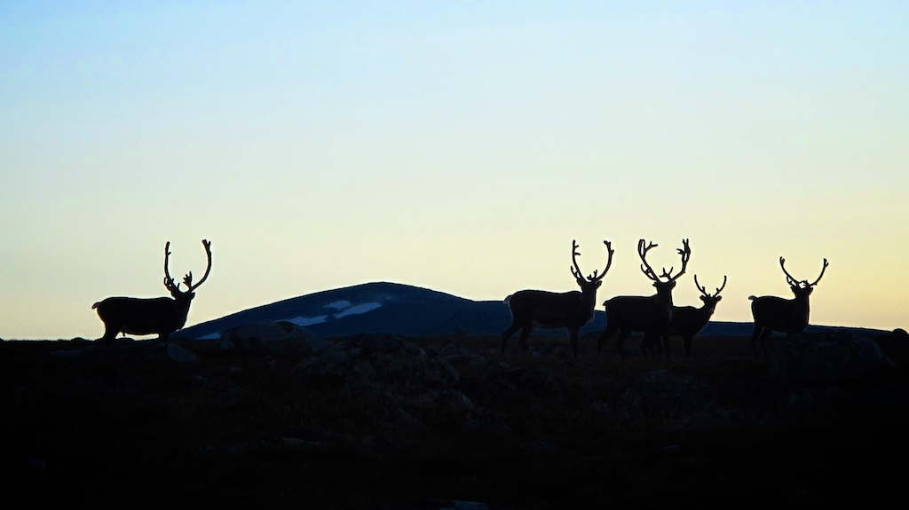
‘When I come to Wales again shall I stop every time we see a sheep?’ With this I sensed Nik was getting bored of me veering off excited to shoot photos every time we saw reindeer. This was as wild as it got for us with fauna, though moose and arctic foxes can be found in Lapland if you’re lucky, and bears and wolves if you’re not.
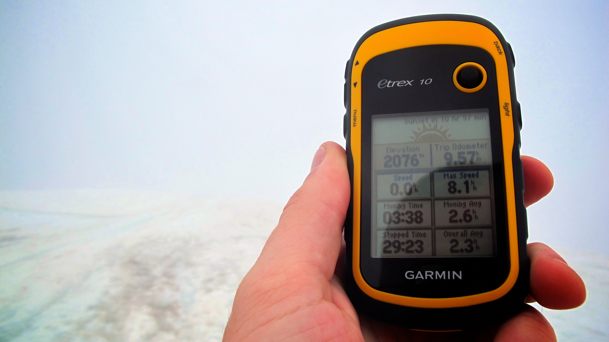
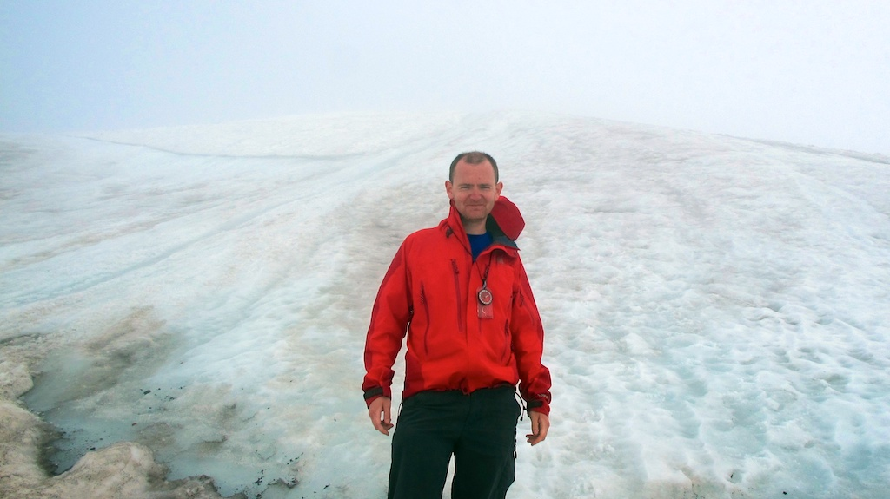
Later in the trek we met back up with the trail to hike Kebnekaise, the highest mountain in Sweden. Here there is a bit more traffic from the lodge in the valley, which is only a 4 hour walk from the road at Nikkaluokta. It was a change of pace being among other walkers.
Those Planing Lakes Will Surely Calm You
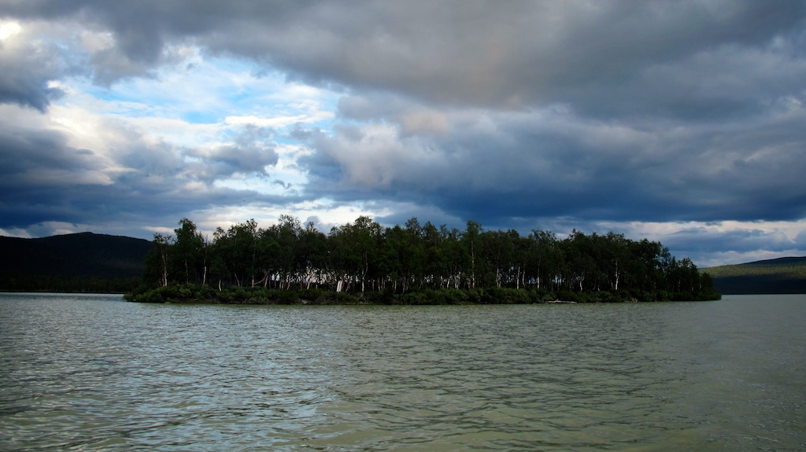
A few times we got to lakes too big to go around, for which we had to find marked on the map crossing points where rowboats are provided. At each lake there are three boats. At least one has to stay on each side, so if you take the last one you have to row across, tow one of the other boats back to where you started and row again: three crossings.
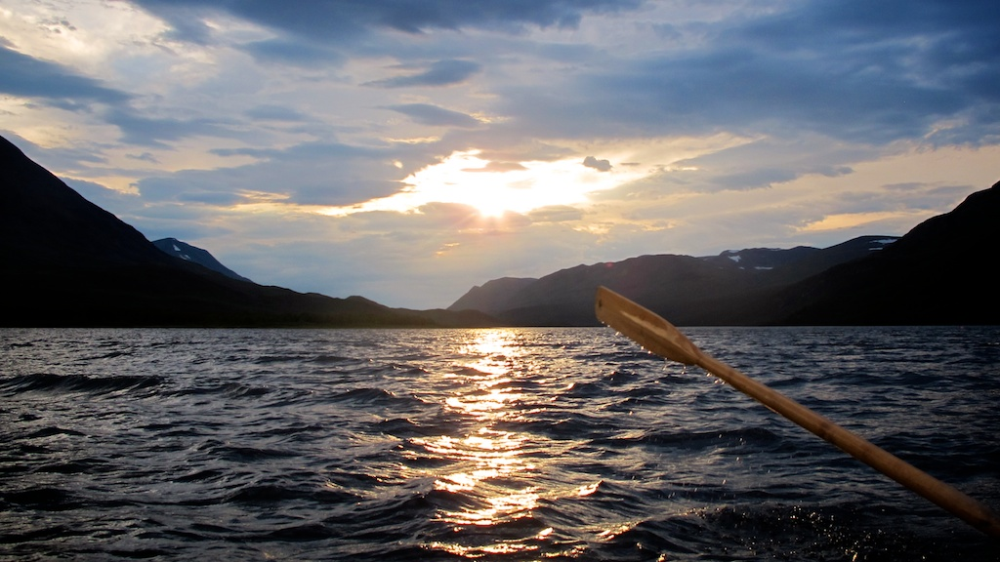
The boats are heavy and designed to be sturdy and stable rather than easy to row, so it could take an hour of rowing each way. We finished those days with tired arms. At one lake, there’s an alternative. Raise a flag on the beach and a local Sami man will come over when he sees it and take you over in a motorboat for 200 SEK (£19). Tempting as it was, we stuck to the oars and getting to Kvikkjokk under our own steam.
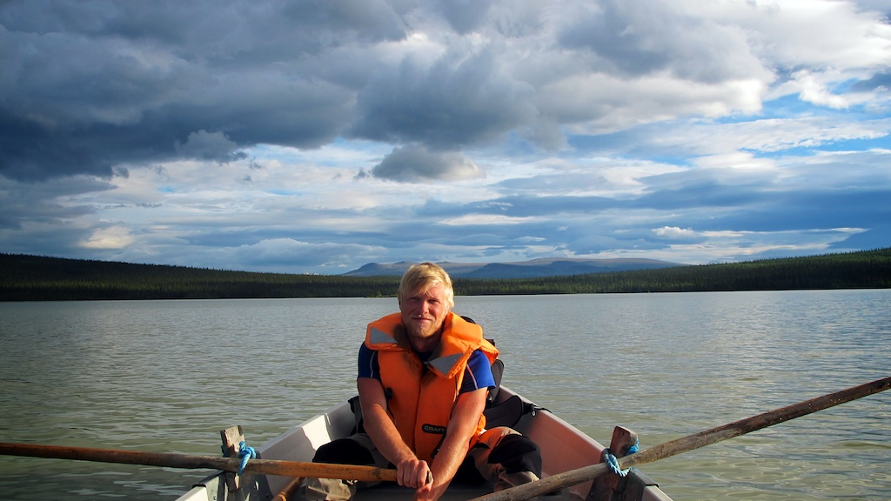
Gimme Shelter
In some remote places you can find STF cabins marked on the map. These are something like Scottish mountain bothies, stocked with firewood and tinned food for emergencies. If you need any of these provisions, they have identifiers for you to pay for what you took by credit card when you’re back home. We walked long into the night to get to one, only to find it already occupied. We camped nearby. Other than that, we never came across cabins at the right time to stay the night.
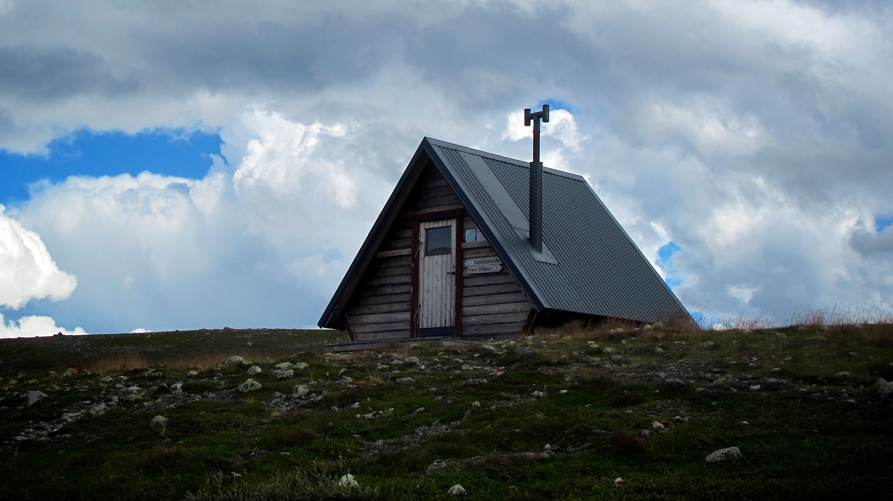
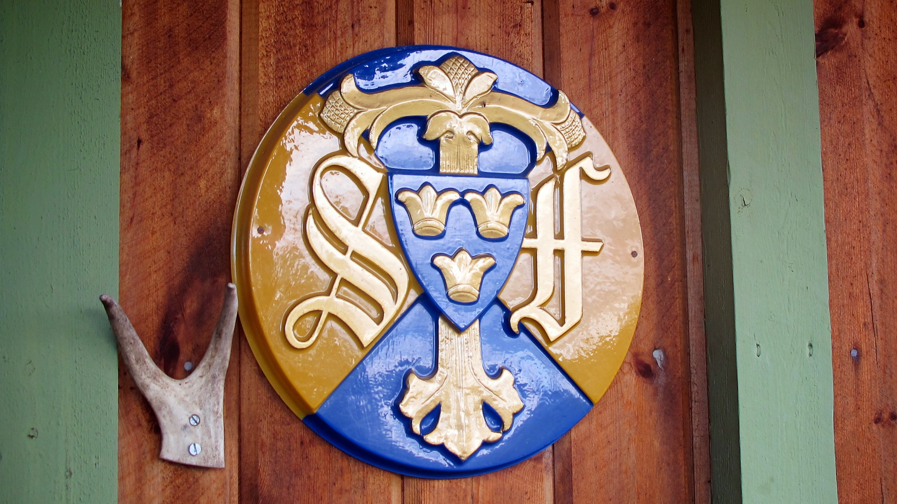
Back on the trail, the bigger STF lodges can fit more people and have all the essentials you need if you’d prefer not to camp: bunks, gas cookers, a wood-burning stove and space to hang wet clothes. Many have volunteer hosts (usually outdoorsy retirees) to look after you and sell a few provisions. Some even have saunas, like this one under the waterfall at Teusajaure, though sadly we didn’t have time to stop here.
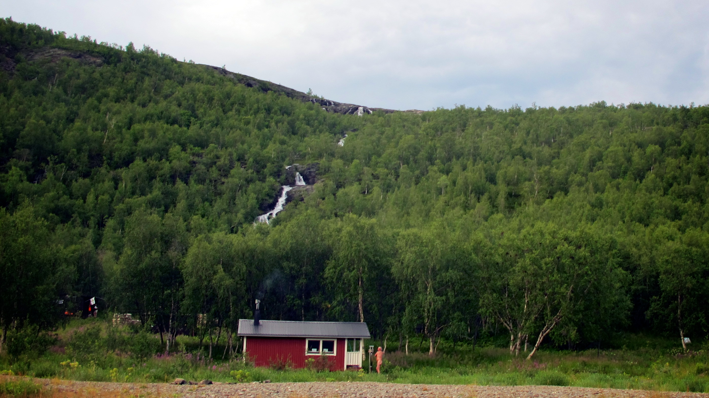
After an incredible fortnight of solitude hiking over mountains, camping under glaciers, rowing over lakes and swimming in freezing rivers, we finally came down into the tiny hamlet of Kvikkjokk and treated ourselves to a first stay in an STF hut and a bed as we waited for the bus to start the journey home.
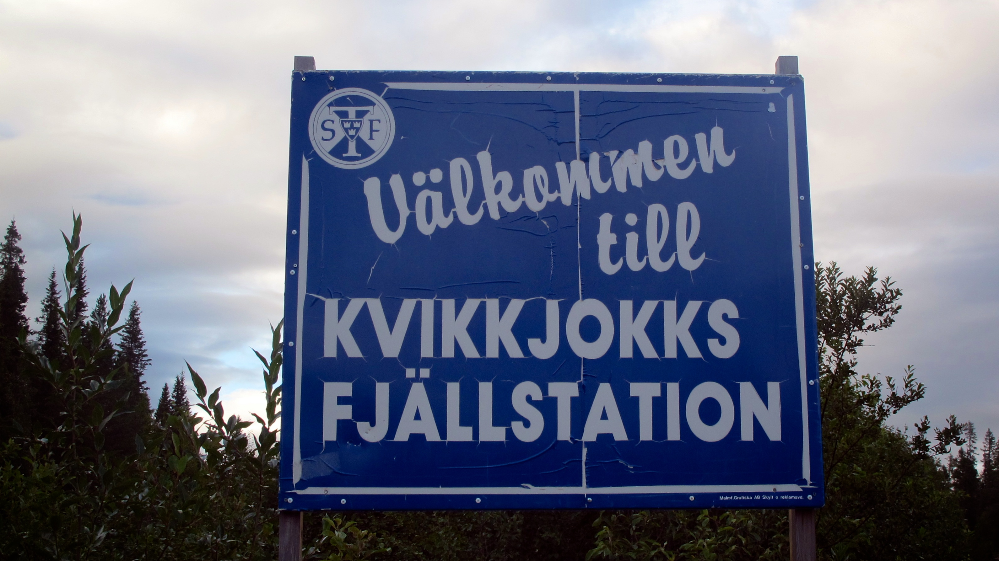
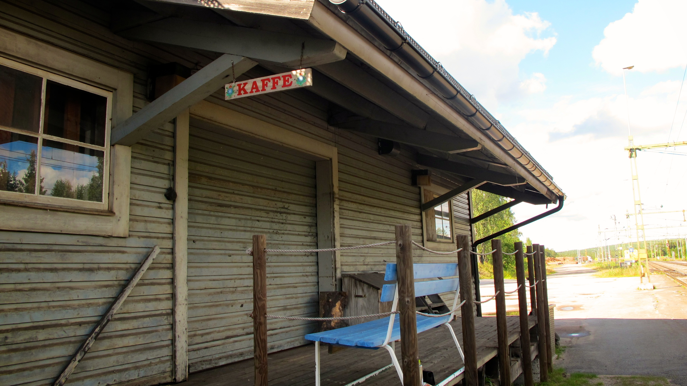
Originally published in Ernest Journal.
The man at the hut looked up at us as we limped over, bedraggled. ‘I’ll get you a beer and a sandwich. Which do you want first, the sauna or the wifi?’
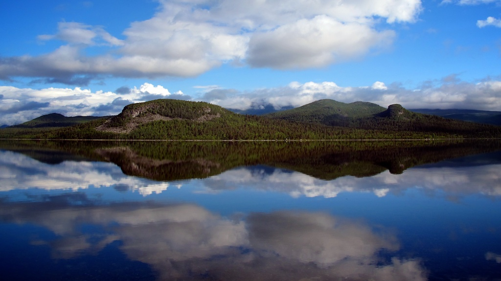